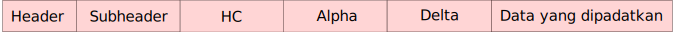

Struktur dari data yang telah dipadatkan oleh deflate
Deflate merupakan algoritma untuk memadatkan data yang sangat populer, algoritma ini digunakan dalam banyak tools dan library seperti gzip, zip archiver, konten pdf, bahkan format gambar png yang terkenal juga memakai deflate sebagai algoritma untuk memadatkan data.
Penjelasan atas beberapa istilah yang digunakan dalam artikel ini
-
Byte Yang dimaksud dengan byte di artikel ini adalah satu unit data yang terdiri dari delapan bit. Di dalam satu byte bit-bit yang ada diberi nomor dari kanan ke kiri sebagai berikut: 76543210
-
Bilangan yang terdiri lebih dari satu byte Bila ada bilangan yang terdiri lebih dari satu byte, maka byte pertama yang datang nilainya paling kecil. Contoh: untuk bilangan yang menggunakan dua byte x08 x02 (heksa) maka x08 nilainya adalah 8 sedangkan x02 nilainya 2 x 256 = 512. Maka angka x08 x02 akan bernilai 8 + 512 = 520 dalam basis desimal.
-
Menggabungkan bit-bit ke dalam satu byte Umumnya data akan disimpan sesuai urutan bitnya yaitu dari kiri ke kanan, akan tetapi untuk Kode Huffman, data disimpan dengan posisi terbalik yaitu mulai dari bit 7 menuju bit 0, atau dari kiri ke kanan.
Struktur umum
Data yang telah dipadatkan menggunakan algoritma deflate berupa serangkaian bytes yang panjangnya tak tentu. Data tersebut kemudian dibagi ke dalam blok-blok yang panjangnya juga tak tentu. Kecuali untuk blok yang tidak dipadatkan akan memiliki panjang maksimum 65535 byte. Tentu saja data tersebut minimum boleh terdiri dari satu blok saja.
Jenis-jenis blok
- Blok yang tidak dikompress
Sesuai namanya, blok ini tidak diapa-apakan, benar-benar data mentah. Panjangnya dibatasi maksimum 65535 byte.
Blok ini terdiri dari header dan body. Body dimulai pada byte berikutnya.

- Blok yang dikompress menggunakan Fixed Huffman Tree
Blok ini terdiri dari header dan body. Body dimulai pada bit berikutnya.

- Blok yang dikompress menggunakan Dynamic Huffman Tree Blok ini terdiri dari header, Huffman Tree A, Huffman Tree B, body. Huffman Tree A, B dan body dimulai pada bit berikutnya. 